南京某创造力培训班声称他们培训非常有效，在他们培训结束后36个6岁幼儿平均创造力潜质为105。假定正常的6岁幼儿的创造力潜质分数为100，标准差为15， 家长们想要了解该培训班是否真的有效，该如何决策？
H0成立下，出现培训后的6岁幼儿这样”高”创造力潜质的概率p\(< \alpha\)，不太可能在一次抽样中出现，所以我们拒绝H0。
两类错误
| 结果显著 |
False positive(假阳性) |
True positive |
| 结果不显著 |
True negative |
False negative(假阴性) |

假设疾控中心在某地发现一例新冠肺炎感染者，现对该感染者的密接人群进行核酸检测。
密切人群中的感染情况：
- 红色实体小人为疾控中心已知的感染者
- 红色边框小人为疾控中心未知的感染者
- 黑色边框小人为疾控中心未知的非感染者
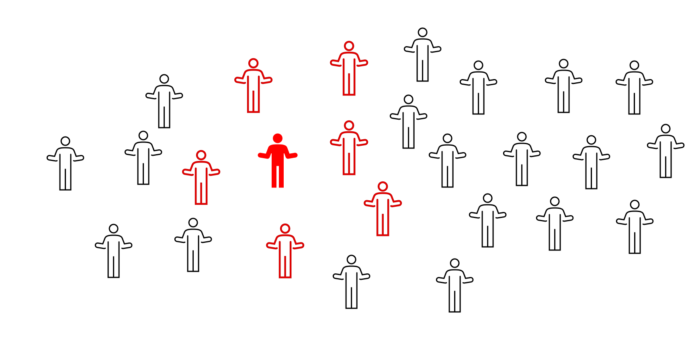
假设我们开启上帝视角，知道该密接人群的真实情况
- 红色边框小人为真实感染者
- 黑色边框小人为真实非感染者
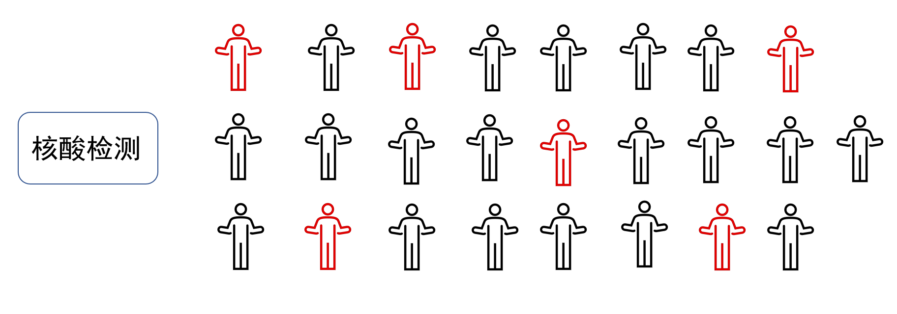
- 在疾控中心视角，他们对该密接人群的状况是未知的，因此要进行核酸检测
- 蓝色边框小人表示在进行核酸检测前，疾控中心假定该人群没有人被感染
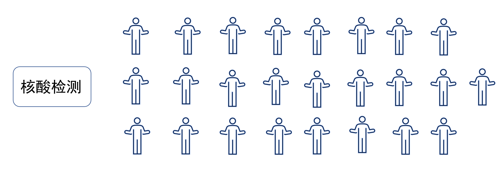
- 在疾控中心视角，他们要根据核酸检测的结果采取进一步措施
- 在进行核酸检测后，红色虚线边框小人结果为阳性，蓝色边框小人结果为阴性
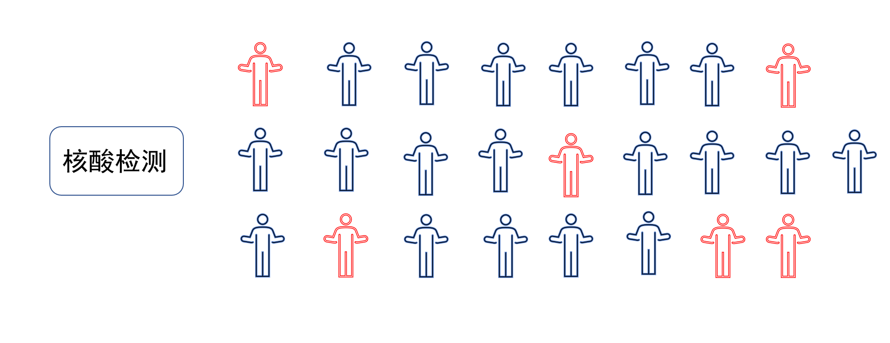
真实的两类错误发生概率是多大？
| 结果显著 |
False positive(假阳性) |
True positive |
| 结果不显著 |
True negative |
False negative(假阴性) |
H0为真的情况下，犯错误的概率为\(\alpha\),又称第一类错误或弃真错误
H1为真的情况下，犯错误的概率为\(\beta\),又称第二类错误或取伪错误
| 结果显著 |
False positive(假阳性)(\(\alpha\)) |
True positive(\(1-\beta\)) |
| 结果不显著 |
True negative(\(1-\alpha\)) |
False negative(假阴性)(\(\beta\)) |
两类错误
- H0为真
- 拒绝H0:\(\alpha\) = P(拒绝H0| H0为真)
- 不能拒绝H0:1-\(\alpha\) = P(不能拒绝H0| H0为真)
- H1为真
- 不能拒绝H0:\(\beta\) = P(不能拒绝H0| H1为真)
- 拒绝H0:1-\(\beta\) = P(拒绝H0| H1为真)
假设疾控中心发现某地有一例新冠肺炎感染者，某小区已封闭管理一个月，即将解封，现在疾控中心需要判断该小区是否存在疫情，他们做出正确决策或犯错误的概率是多少
H0:该感染者居住的小区不存在疫情
两类错误出现的真实概率
\[\alpha=0.05,\beta=0.2\]
| 拒绝H0 |
第一类错误/弃真错误(？%) |
正确(？%) |
| 不能拒绝H0 |
正确(？%) |
第二类错误/取伪错误(？%) |
| 拒绝H0 |
第一类错误/弃真错误(5%) |
正确(0%) |
| 不能拒绝H0 |
正确(95%) |
第二类错误/取伪错误(0%) |
假设疾控中心发现某地有一例新冠肺炎感染者，现在疾控中心需要判断该感染者的同事居住的小区是否存在疫情
H0:该感染者的同事居住的小区不存在疫情
H1:该感染者的同事居住的小区存在疫情
如果该感染者的同事感染新冠的概率为50%，在此情况下，疾控中心做出正确决策或犯错误的概率是多少？
\[\alpha=0.05,\beta=0.2\]
| 拒绝H0 |
第一类错误/弃真错误(？%) |
正确(？%) |
| 不能拒绝H0 |
正确(？%) |
第二类错误/取伪错误(？%) |
\[\alpha=0.05,\beta=0.2\]
| 拒绝H0 |
第一类错误/弃真错误(2.5%) |
正确(40%) |
| 不能拒绝H0 |
正确(47.5%) |
第二类错误/取伪错误(10%) |
小练习1
假设疾控中心发现某地有一例新冠肺炎感染者，现在疾控中心需要判断该感染者的同事居住的小区是否存在疫情
H0:该感染者的同事居住的小区不存在疫情
H1:该感染者的同事居住的小区存在疫情
如果该感染者的同事感染新冠的概率为90%
\[\alpha=0.05,\beta=0.2\]
| 拒绝H0 |
第一类错误/弃真错误(？%) |
正确(？%) |
| 不能拒绝H0 |
正确(？%) |
第二类错误/取伪错误(？%) |
\[\alpha=0.05,\beta=0.2\]
| 拒绝H0 |
第一类错误/弃真错误(0.5%) |
正确(72%) |
| 不能拒绝H0 |
正确(9.5%) |
第二类错误/取伪错误(18%) |
小练习2
假设疾控中心发现某地有一例新冠肺炎感染者，现在疾控中心需要判断该感染者的同事居住的小区是否存在疫情
H0:该感染者的同事居住的小区不存在疫情
H1:该感染者的同事居住的小区存在疫情
如果该感染者的同事感染新冠的概率为95%
\[\alpha=0.05,\beta=0.2\]
| 拒绝H0 |
第一类错误/弃真错误(？%) |
正确(？%) |
| 不能拒绝H0 |
正确(？%) |
第二类错误/取伪错误(？%) |
\[\alpha=0.05,\beta=0.2\]
| 拒绝H0 |
第一类错误/弃真错误(0.25%) |
正确(76%) |
| 不能拒绝H0 |
正确(4.75%) |
第二类错误/取伪错误(19%) |
\[\alpha=0.01,\beta=0.2\]
| 拒绝H0 |
第一类错误/弃真错误(？%) |
正确(？%) |
| 不能拒绝H0 |
正确(？%) |
第二类错误/取伪错误(？%) |
\[\alpha=0.01,\beta=0.2\]
| 拒绝H0 |
第一类错误/弃真错误(0.05%) |
正确(76%) |
| 不能拒绝H0 |
正确(4.95%) |
第二类错误/取伪错误(19%) |
\[\alpha=0.05,\beta=0.01\]
| 拒绝H0 |
第一类错误/弃真错误(？%) |
正确(？%) |
| 不能拒绝H0 |
正确(？%) |
第二类错误/取伪错误(？%) |
\[\alpha=0.05,\beta=0.01\]
| 拒绝H0 |
第一类错误/弃真错误(0.25%) |
正确(94.05%) |
| 不能拒绝H0 |
正确(4.75%) |
第二类错误/取伪错误(0.95%) |
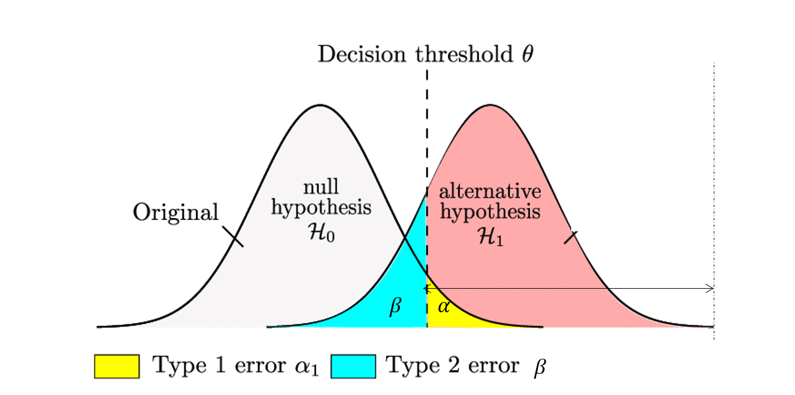https://www.researchgate.net/figure/Statistical-hypothesis-testing-test-d-allowing-to-guarantee-a-prefixed-false-alarm-rate-l_fig3_331206334
敏感性(Sensitivity)是指在真正呈阳性的条件下，出现阳性测试的概率，即H1为真的情况下，拒绝H0 的概率
特异性(Specificity)是指在真正阴性的条件下，出现阴性测试的概率，即H0为真的情况下，拒绝H0 的概率
| 拒绝H0 |
第一类错误/弃真错误 |
统计功效(power) |
| 不能拒绝H0 |
正确 |
第二类错误/取伪错误 |
统计功效的意义
\(1-\beta\)： 统计功效/敏感性
影响统计功效的因素
效应量(effect size)
样本量(sample size)
显著性水平
效应量(effect size)
- 独立于样本容量，表明变量间实际关联强度的测度值，它可以定量帮助研究者判断统计学意义上的显著性结果是否有实际效用或实际效用的强度
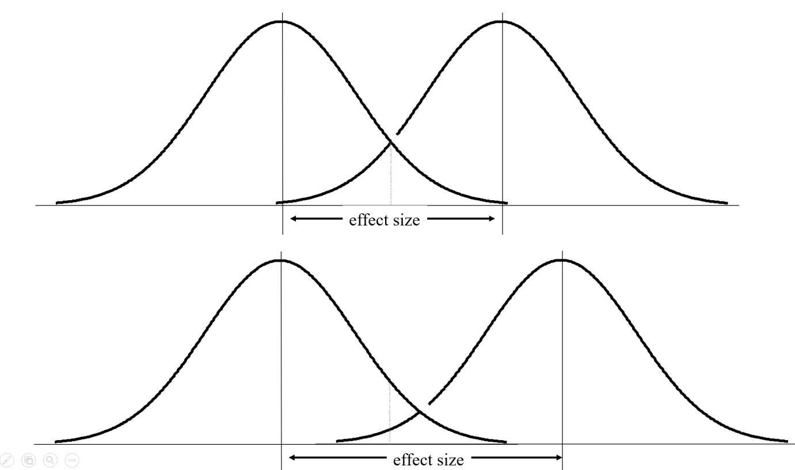
Cohen’s d它采用两个平均值之间的差异并以标准差单位表示，这就可以使不同量纲之间的效应相互比较。
\[d = \frac{\bar{x_1}-\bar{x_2}}{s}\] \(\bar{x_1}\):组1的平均值
\(\bar{x_1}\):组2的平均值
\(s\):标准差
效应量和统计功效
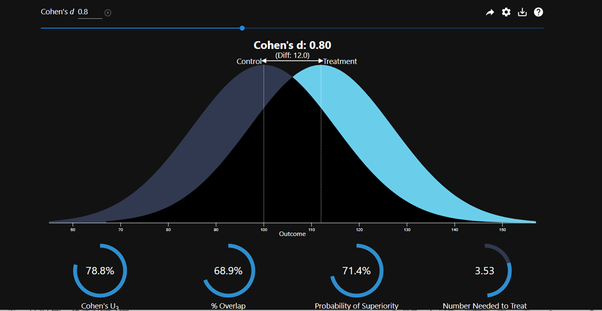https://rpsychologist.com/cohend/
样本量一定，效应量变化

https://rpsychologist.com/d3/nhst/
效应量一定，样本量变化
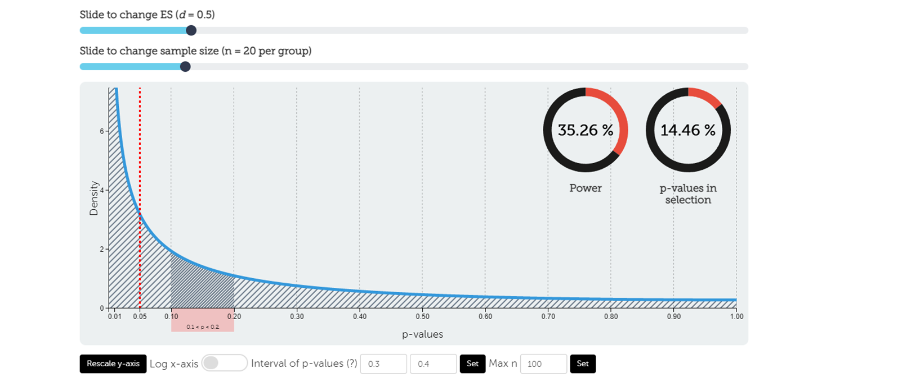https://rpsychologist.com/d3/nhst/
小练习
请大家在该网址动手实践(https://rpsychologist.com/d3/nhst/)，通过调整不同的参数，查看效应量，样本量，显著性水平三者之间的关系。
先验功效分析
先验功效分析（a priori power analysis）是一种根据期望效应量、显著性水平和统计功效来确定研究所需样本量的统计学方法。它在研究开始之前进行，用于估计足够的样本量以获得足够的统计学功效。换句话说，它帮助研究人员确定他们需要多少参与者在他们的研究中以一定的信心水平检测到一定大小的效应。
灵敏度功效分析
灵敏度功效分析(Sensitivity power analysis)是一种探索不同情况如何影响功率分析结果和结论的方法。它有助于研究人员通过检查数据的不同假设如何影响结果来评估其功率分析的稳健性。换句话说，对于给定的α、功率和样本量，你的研究将有多大的功效来检测效应大小。这有助于解释结果，因为你可以概述你的研究对什么效应大小敏感，以及哪些效应太小，你无法可靠地检测。
对于两组被试均为40人的单因素实验
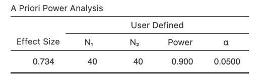
假设双侧检测标准允许最大一类错误率为\(\alpha =0.05\)，则每组样本量为40的设计将可靠地(大于0.9的概率)检测出≥0.734的效应量。
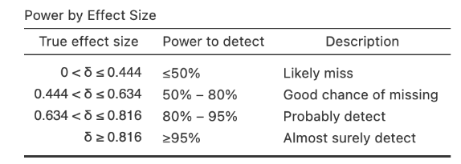
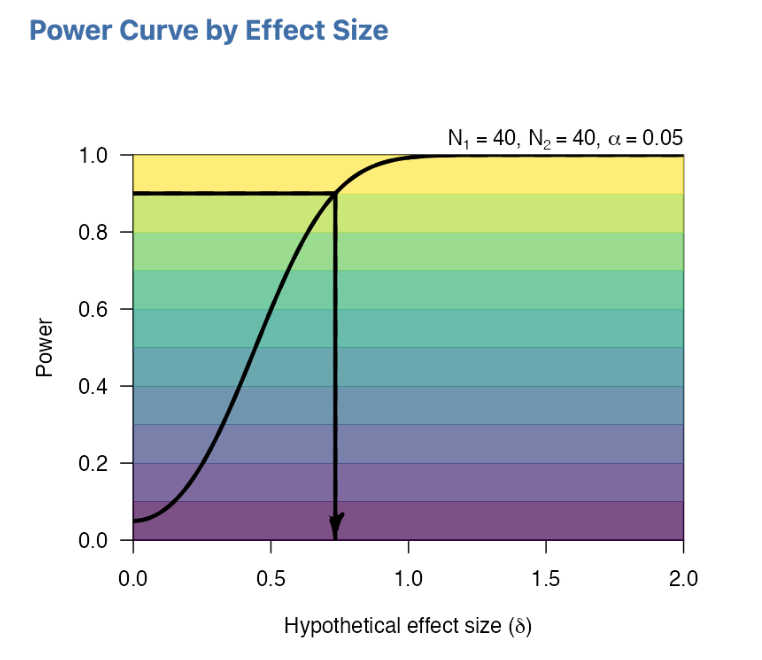
功效曲线显示，随着效应量的减少(x轴上的值越小)，对于固定的样本量，我们的统计功率越小(y轴上的值越小)。我们期望的90%的功率水平由黑色水平线和黑色曲线的交点表示。
（James E Bartlett & Sarah J Charles，2022）
确定样本量
可以使用R的pwr包确定样本量
Two-sample t test power calculation
n = 16.71472
d = 1
sig.level = 0.05
power = 0.8
alternative = two.sided
NOTE: n is number in *each* group
如何提高统计功效
提高样本量
提高效应量
提高显著性水平
减小测量误差
使用单尾检验而不是双尾检验
事后的统计功效分析是没有太大意义的
从平均数为100，标准差为15的总体中抽取样本量为36的样本，重复100000次，计算其全部样本的power
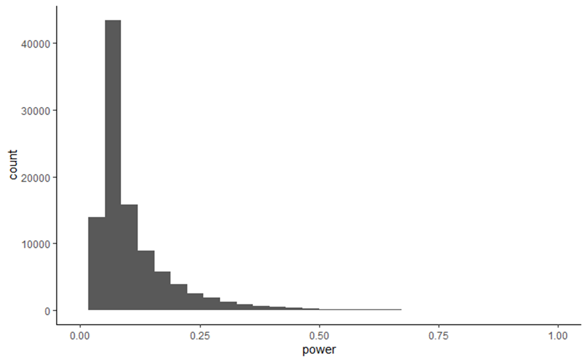
从平均数为100，标准差为15的总体中抽取样本量为36的样本，重复100000次，选取p值小于0.05的样本，计算其power

小结
Alpha (α)
显著性水平 |
我们愿意接受的最大的假阳性概率 |
在传统上被设置为0. 05，但在物理等学科中往往被设置为较低的阈值 |
Beta (β)
犯二类错误的概率 |
我们愿意接受的最大的假阴性概率 |
在心理学中，这通常被设置为0. 20 |
Power (1-β)；
统计检验力 |
检测到真实存在的效应的概率 |
通常设置为0. 80。统计检验力越大，就越有可能成功地发现一个真实存在的效应。 |
Effect size；
效应量 |
独立于样本容量，表明变量间实际关联强度的测度值 |
如Cohen’ s d。更高的绝对效应值意味着更大的差异或更强的关系。 |
One-tailed test；
单尾检验 |
当原假设显著性检验中的拒绝域被限制在一个正方向或负方向的尾部时。 |
如果你有一个理想的预先明确的方向预测，单尾检验意味如果结果是你预测的方向，你会拒绝原假设。但当观察到的结果处于相反尾部的极端，仍然无法拒绝原假设。 |
Two-tailed test；
双尾检验 |
当原假设显著性检验中的拒绝域同时存在于正、负尾区域的极值时。 |
如果你愿意接受任何方向的结果，你可以使用双尾检验来拒绝原假设。观察到的结果处于正尾或负尾的极端，你可以拒绝原假设。 |
a priori power analysis；
先验功效分析 |
我们需要多少参与者来可靠地检测alpha和统计功效、给定的兴趣变量的最小效应值? |
我们倾向于在数据收集之前进行的功效分析之前使用”先验”一词。这是因为我们正在从我们已经拥有的信息中推断参与者的数量。 |
Sensitivity power analysis；
灵敏度功效分析 |
我们可以用固定的样本量、alpha和期望的功效来检测什么大小的效应量? |
当我们已经知道有多少个参与者时，我们使用敏感度功效分析。我们使用这种类型的分析来评估我们能够可靠地检测到的效应大小。 |